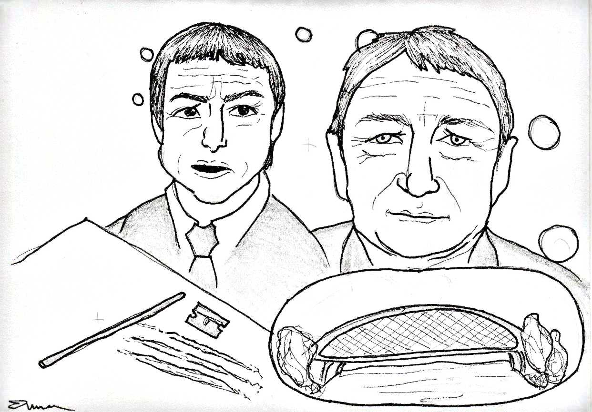

obsah čísla | následující článek »
Onehdá jsem se bavil s jedním svým známým, který pracuje ve stavebnictví a má co do činění s různými stavbami, které vznikají na území hlavního města Prahy. Ptal se mě, jestli už jsem viděl nový Trojský most. Když jsem přikývl, pustil se do vychvalování všech těch technických vychytávek a světových unikátů, které tento most skýtá.
Pak ale z toho vychvalování trochu obrátil: Zase na druhou stranu je to proti všem možným zákonům o veřejných zakázkách. Nestavělo se podle původního zadání a rozpočet byl překročen bůhví kolikrát.
„Já si to představuju tak,“ dodal známý, „že si Janoušek s Bémem dali lajnu koksu a pak si řekli: Co za ty prachy navíc postavíme?“ A tak vznikl Trojský most.
Nedávno jsem se na ten most šel podívat. A vskutku – člověk ani nemusí chápat, v čem všem je ta konstrukce unikátní, aby ho to oslovilo. Most působí skutečně velkolepě, zvlášť když se v noci rozsvítí.
Směle se klene přes celou šíři Vltavy, na mohutný oblouk mostu je elegantním výpletem zavěšena široká mostovka zakončená stylovým zábradlím.
Působí to velkolepě, ale možná až příliš. Kdyby stál tenhle most v nějakém menším městě, snadno by se mohl stát jeho dominantou. Ale Praha už jednu mostní dominantu má, a to Karlův most. A tomu se těžko konkuruje.
Otázka, jak získat nesmrtelnost, je asi stejně stará jako lidstvo samo. Objevuje se už v Eposu o Gilgamešovi, pravděpodobně nejstarším dochovaném příběhu.
Gilgameš, vládce města Uruku, se v tomto příběhu vydává hledat nesmrtelnost. Po mnoha peripetiích dochází k závěru, že nesmrtelnost prostě nezíská.
Respektive – pro sebe ji nezíská, ale pro své celoživotní dílo – hradby města Uruku – nesmrtelnost získá.
Proto se nám nabízejí dvě otázky:
Zaprvé – nechtěli si pražští konšelé spíše získat nesmrtelnost než úplatky stavebních firem? Přecejen – Trojský most dozajista přežije jejich funkční období.
A za druhé – neporušil Gilgameš, král města Uruku, zákon o veřejných zakázkách?